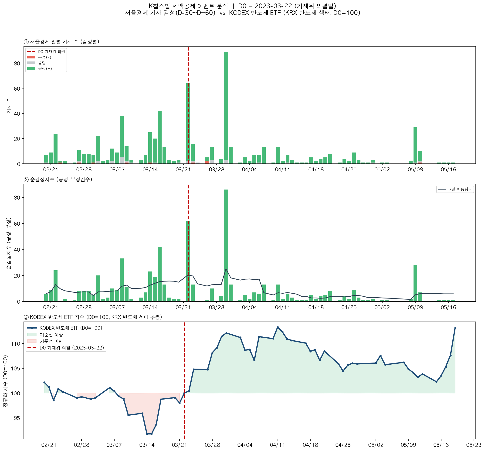
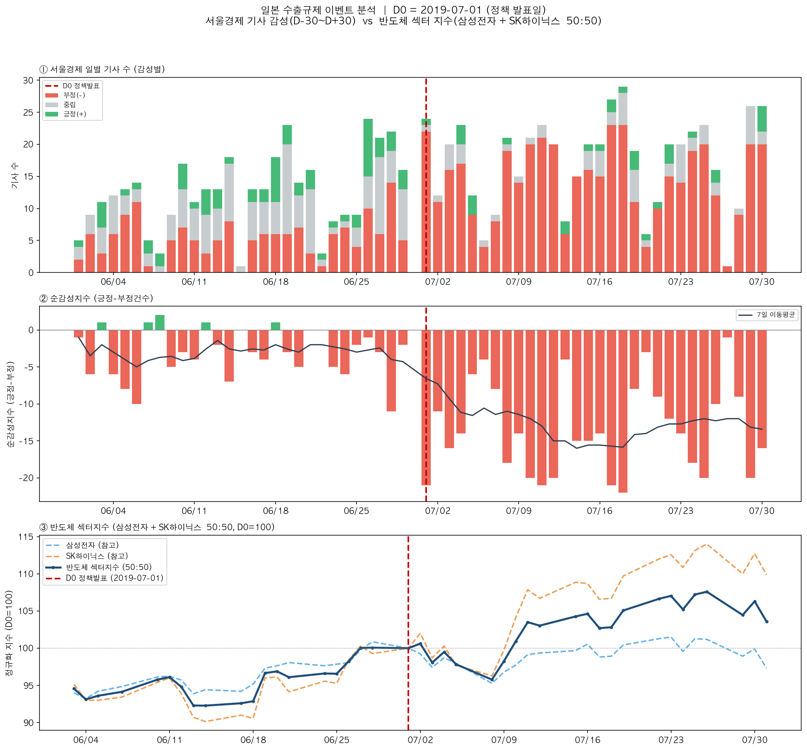

주요 경제 정책의 발표가 자본시장에 미치는 영향을 측정하고,
언론 보도의 감성 변화와 주가 움직임 사이의 구조를 탐색하는 연구입니다.
정부 정책 발표 전후의 주가 변동을 이벤트 스터디로 측정하고, 동일 시간축의 뉴스 기사 감성 변화와 대조하여 정책-언론-시장 사이의 관계를 분석합니다.
단방향(정책 → 시장)이 아닌, 기사-정책-주가의 피드백 루프 전체를 3개 계층으로 분해하여 관찰합니다.
1998년부터 2025년까지 5개 산업 섹터에서 각 10건씩, 총 50건의 정책 이벤트를 선정했습니다. 각 이벤트에 대해 발표일 전후 대표 종목의 주가 변동률을 실측 검증했습니다.
| 섹터 | 날짜 | 이벤트 | 대표 종목 | 반응일 | 변동률 | 상태 |
|---|
50건 전건에 대해 4단계 독립 검증을 수행했습니다. 모든 수치는 Python 스크립트로 재현 가능하며, 재현 오차율은 0.00%입니다.
| 항목 | 기준 | 설명 |
|---|---|---|
| 변동률 임계 | |R| ≥ 2.0% | D+0~D+5 구간 내 최대 일간 수익률 절대값 |
| 수익률 정의 | R(t) = Close(t)/Close(t-1) - 1 | 전일 종가 대비 당일 종가 등락률 |
| D0 결정 | 발표 당일 (공휴일 시 익영업일) | 해외 정책은 한국장 마감 기준으로 조정 |
| 대표주 선정 | 정책 민감도 우선 | 대형주보다 직접 수혜/피해 종목 우선 채택 |
| 반응 윈도우 | D+0 ~ D+5 | 지연 반응이 명확한 경우 D+5까지 허용 |
| 데이터 출처 | 이중 소스 | FinanceDataReader(2014~) + 포털 금융(~2013) |
날짜 팩트체크에서 WARN 판정된 9건은 모두 각주로 사유를 명시하고 유지했습니다.
| 이벤트 | WARN 원인 | 처리 |
|---|---|---|
| 반도체#1 | 공정위 승인일 별도 확인 불가 | 계약 체결일 기준 유지, 각주 기재 |
| 반도체#2 | 8월 발표 확실하나 22일 특정 출처 미발견 | 각주 기재 유지 |
| 금융#4 | 발표일 vs 시행일 출처 혼재 | 시행 첫 거래일 D0 명확 표기 |
| 부동산#1 | 1998-05-22 특정 출처 미발견 | D+5 각주 보강 |
| 바이오#1 | 법정 시행일 vs 실질 전면 시행일 | 계도기간 각주 명시 |
| 바이오#3 | 1차 방영 vs 2차 방영 | 2차 방영(조작 의혹) 기준 각주 명시 |
| 바이오#5 | 법정 시행일이 일요일 | 익영업일 처리 각주 명시 |
| 2차전지#2 | 언론 보도일 기준, 특정 출처 미발견 | 보도일 D0 기준 명시 |
| 2차전지#9 | 발표일 vs 고시 발효일 혼재 | 발표일 D0 기준 사유 각주 |
주가 원시 데이터, 수익률 계산, 기사 감성 집계, QA 검증까지 계층적으로 구성된 데이터 패키지입니다.
동일 시간축에서 뉴스 감성의 흐름과 주가의 움직임을 겹쳐 관찰합니다.

발표일 직후 긍정 기사가 급증하며 순감성지수가 양(+)으로 전환됩니다. ETF는 기준선 대비 약 5% 상승 후 안정 구간에 진입합니다. 사전 기사량이 상대적으로 적었던 만큼 발표 당일 반응이 뚜렷하게 나타난 사례입니다.

발표 전부터 부정 기사가 압도적이며 순감성지수가 지속적으로 음(-). 주가는 초기 하락 후 국산화 기대감으로 V자 반등하는 패턴을 보입니다. 부정적 논조가 지속되는 가운데 주가가 반등한 사례로, 감성-주가 괴리의 전형적 패턴을 관찰할 수 있습니다.
이 데이터셋을 통해 다루고자 하는 연구 질문입니다.